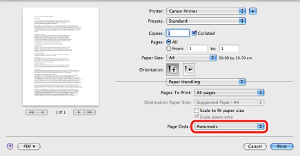
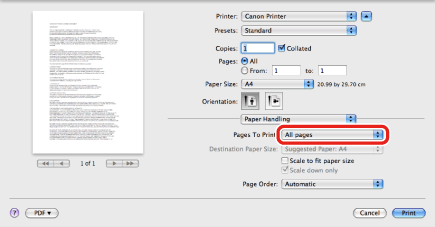

Changing the Order of Pages
You can change the print order of the pages.
1.
From the [File] menu of the application software, select [Print].
The [Print] dialog box is displayed.
2.
The [Paper Handling] preferences pane is displayed.
3.
Specify the page order.

4.
Select which pages to print from among [All pages], [Odd Only], and [Even Only].

If you are using Mac OS X 10.4.x, select from among [All pages], [Odd numbered pages], and [Even numbered pages].